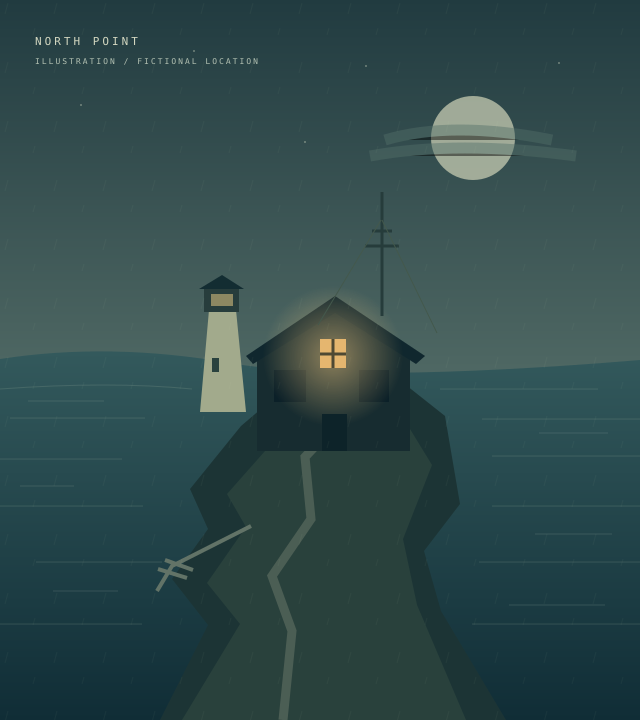

AN ORIGINAL FICTIONAL SERIES
The Last
Signal.
A parcel. A closed radio station.
A message that was never meant to be a mystery.
Listen to the story. Follow your curiosity.
Discover only what belongs to this moment.
Two short episodes. Original fiction. Synthetic demo narration.

THE LISTENING ROOM
There is more to the story.
PART 01 / THE PARCELLoading audio
IN THIS MOMENT
Opening the archive...
Follow your curiosity
Only what the story has revealedA QUESTION TO KEEP
Why are there two bells?
Keep this question with you as the story unfolds.
Read the story so far
Select a passage to return to it. Later passages appear as you reach them.
Just you and the story.
The full narrative is in the audio.
Turn context back on whenever curiosity calls.